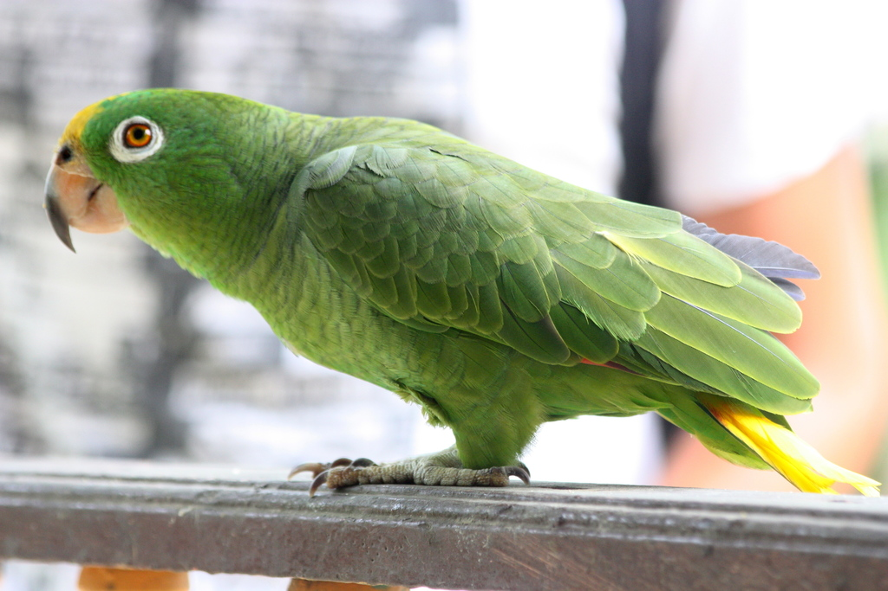
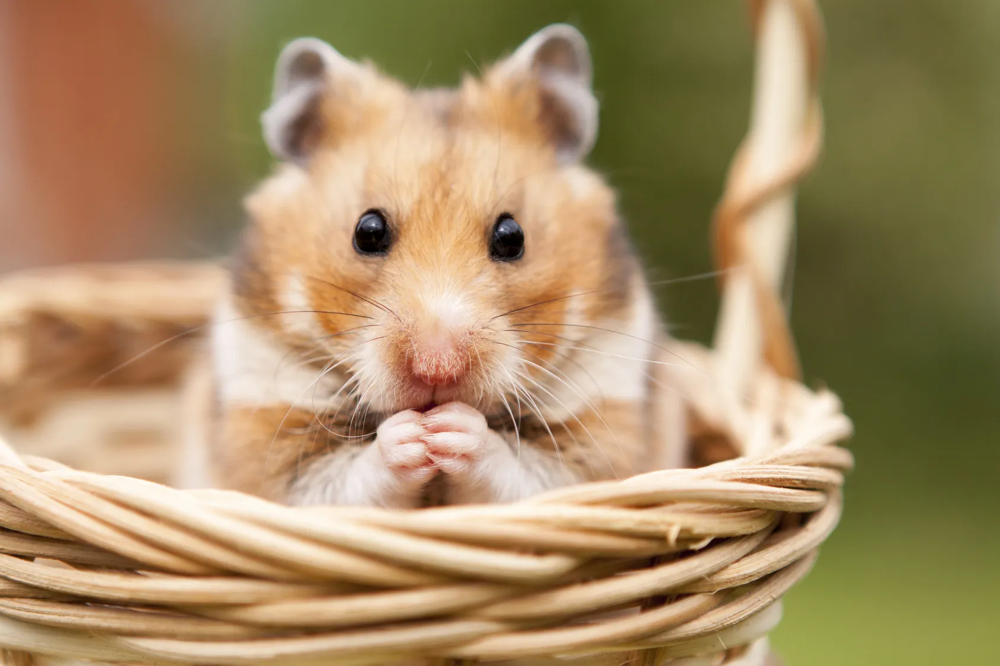
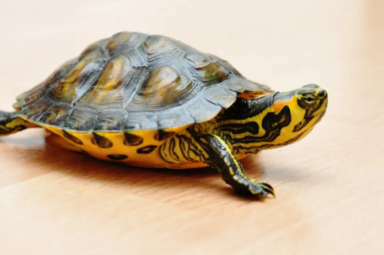

Luna
Gata naranja de 3 años. Experta en caminar sobre el teclado justo cuando estoy escribiendo código.
Gata 3 añosLos mejores compañeros de programación que existen.
Gata naranja de 3 años. Experta en caminar sobre el teclado justo cuando estoy escribiendo código.
Gata 3 años
Labrador de 5 años. Mi fiel compañero para salir a caminar y despejar la mente después de depurar bugs.
Perro 5 años
Loro cotorro de 2 años. Sabe decir "Hello World" y ya está aprendiendo a decir "console.log".
Loro 2 años
Hámster explorador. Le encanta correr en su rueda mientras compilo grandes proyectos.
Hámster 1 año
Gata siamesa muy vocal. Me avisa cuando es hora de tomar un descanso del monitor.
Gata 4 años
Tortuga veloz (a su manera). Me recuerda que la constancia supera a la rapidez en el código.
Tortuga 10 años